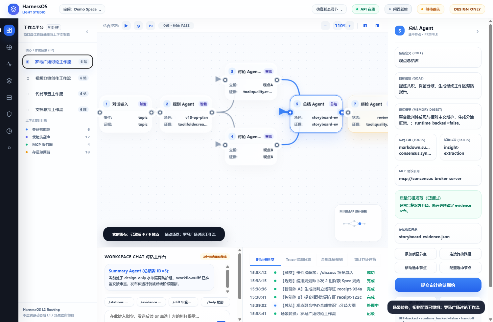
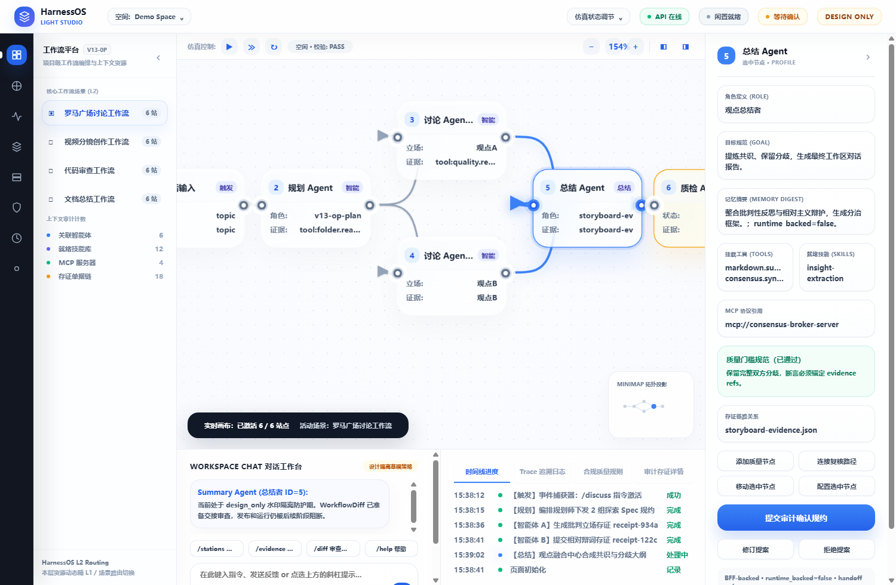
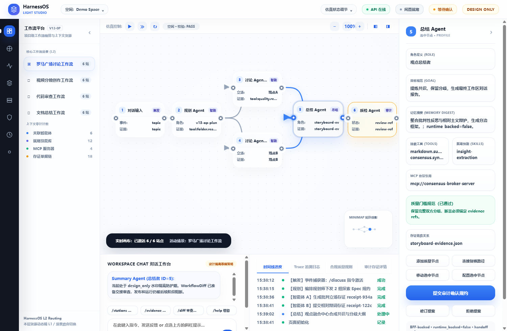
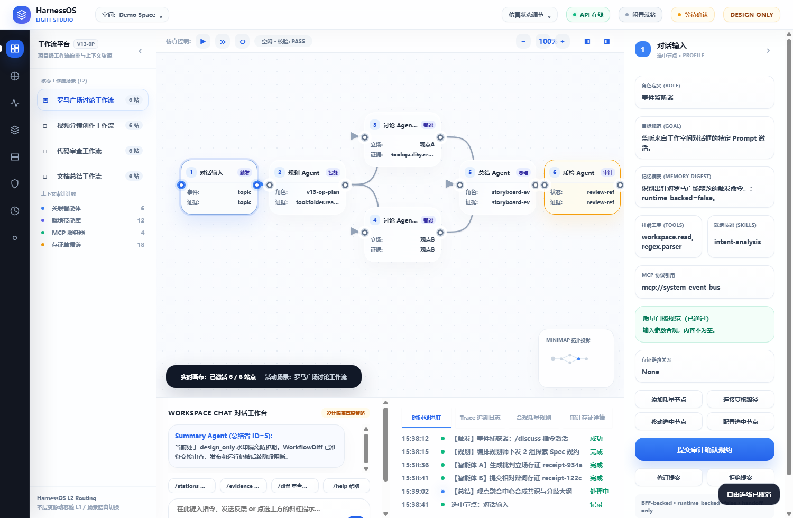
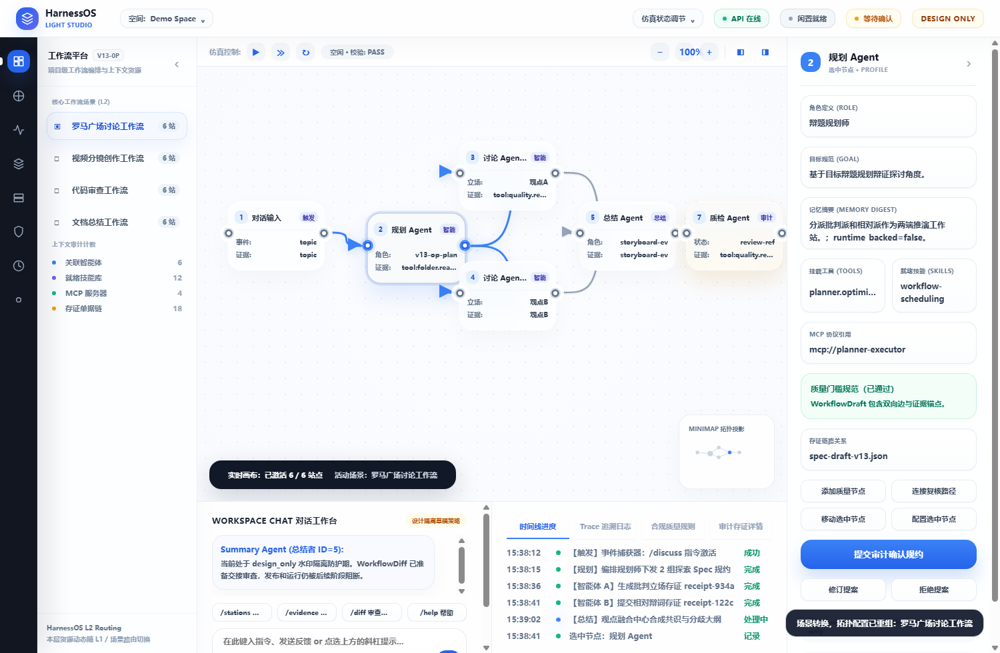
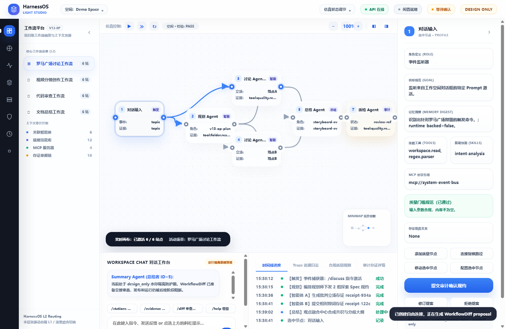
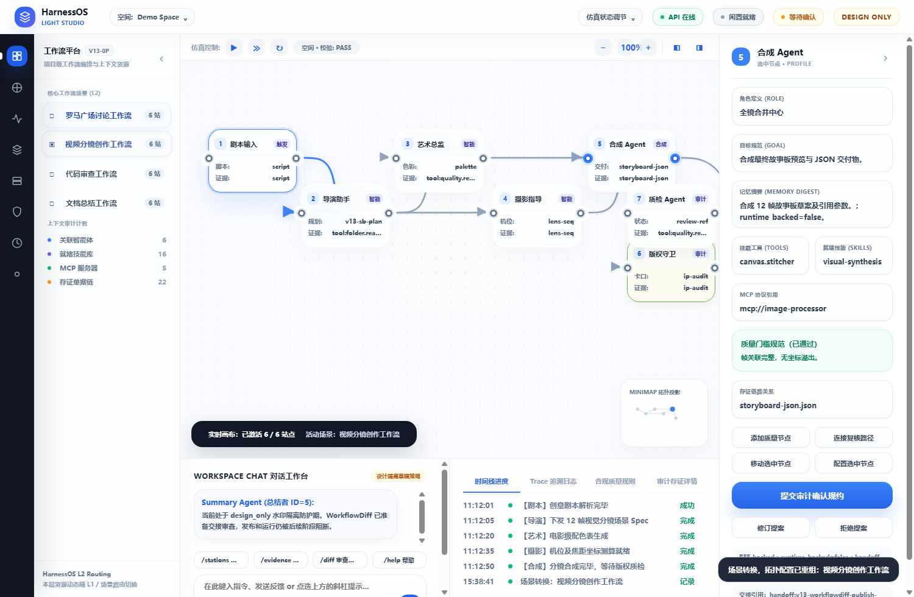
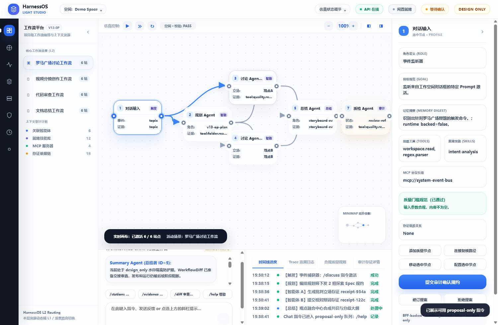
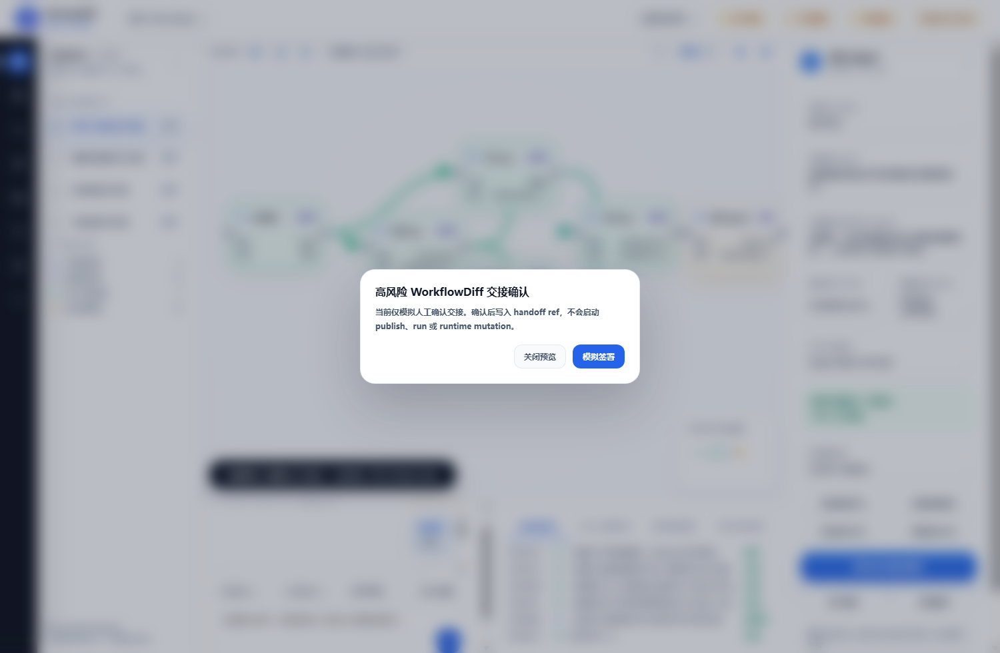
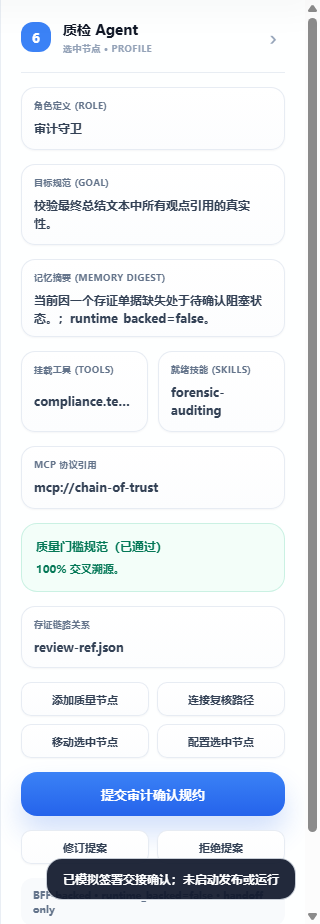

自动化总状态PASS
端口连线最大偏差1.553px
截图证据12 张
Manifest Artifact32 项
验收结论
通过范围：V13 editable Studio pilot slice 可供审查。用户可以在浏览器中查看 V13 Studio 画布、选择节点、缩放、拖拽、切换场景、使用 Chat Workbench 指令、查看 WorkflowDiff 并走到人工 handoff。
明确不通过/不声明范围：不证明完整 Workflow Studio，不证明 runtime execution，不证明 product-grade frontend complete，不证明 Xpert parity，不证明 production ready，不证明 Agent executor ready。
目标架构摘要
- 产品目标：从 CLI/TUI-first governed runtime 演进为可审查的 Studio 产品界面。
- 浏览器必须经过 Studio BFF 和 DTO，不得直接写 runtime truth。
- V13 目标：editable WorkflowSpecGraph pilot、GraphValidationResult、NodeInspector、WorkflowDiffProposal、handoff-only 确认。
- 后续 V14/V15 才覆盖 governed extension ecosystem、trace/metrics/audit/deployment smoke。
当前实现摘要
- Browser route：
?studio=v13-editable-studio。 - BFF route：
/bff/v13/*与测试 route-log 端点。 - DTO：
v13.workflow_spec_graph.v1，节点数 8，边数 8。 - WorkflowDiff：
diff-v13-editable-studio-pilot-001，状态awaiting_user_confirmation，publish_or_run_started=false。 - Runtime boundary：
runtime_backed=false。
自动化测试命令
python3 tools/v13/run_v13_workflow_studio_acceptance.pynode node_modules/typescript/bin/tsc -p tsconfig.jsonnode node_modules/vite/bin/vite.js buildnode e2e/v13_cdp_acceptance.mjspython3 tools/v13/generate_v13_visual_acceptance_html_report.py
本次自动化使用 headless Chrome/CDP 截图，不会抢占桌面焦点或弹出可见窗口。
用户场景截图证据
默认画布与连接线端口对齐
edge-default-screenshot.png缩放后的连接线稳定性

edge-zoom-screenshot.png普通滚轮缩放缺陷回归

canvas-defect-wheel-zoom.png右侧空白区域节点拖放

canvas-defect-right-area-drag.png自由连线取消路径

canvas-defect-connect-cancel.png拖拽后的画布几何

edge-drag-screenshot.png端口拖拽自由连接

edge-free-connect-screenshot.png场景切换：视频分镜工作流

scenario-storyboard-screenshot.pngChat Workbench 指令路径

chat-command-screenshot.png仿真阻断状态下的边线语义

simulation-edge-state-screenshot.png高风险交接确认弹层
simulation-blocked-modal-screenshot.png节点 Inspector 投影

node-inspector-screenshot.png连接线几何验收
自动化读取 SVG path 起止点和 DOM port 外沿锚点，使用屏幕坐标计算距离。阈值为 3.5px；缺端口、缺箭头 marker 或跳过边都会失败。
| 检查点 | 状态 | 边数量 | 阈值 |
|---|---|---|---|
| initial_100 | PASS | 6 | 3.5 px |
| wheel_zoom | PASS | 6 | 3.5 px |
| right_area_drag | PASS | 6 | 3.5 px |
| zoom_110 | PASS | 6 | 3.5 px |
| after_drag | PASS | 6 | 3.5 px |
| after_free_connection | PASS | 7 | 3.5 px |
| simulation_blocked | PASS | 7 | 3.5 px |
画布缺陷回归
本区专门覆盖用户指出的四项问题：普通滚轮缩放、右侧可见空白拖放、自由连线取消、首屏连线和箭头可见性。
| 缺陷编号 | 验收目标 | 状态 | 截图证据 |
|---|---|---|---|
| CANVAS-01 | 首屏连线与箭头可见 | PASS | edge-default-screenshot.png |
| CANVAS-02 | 画布普通滚轮缩放 | PASS | canvas-defect-wheel-zoom.png |
| CANVAS-03 | 右侧可见空白区域可拖放节点 | PASS | canvas-defect-right-area-drag.png |
| CANVAS-04 | 自由连线可取消且不会假创建 | PASS | canvas-defect-connect-cancel.png |
交互路径验收
| 检查项 | 状态 | 说明 |
|---|---|---|
| l1_agents_route_updates_l2 | PASS | 一级导航切到智能体目录，L2 内容更新。 |
| l1_workbench_route_restores_scenarios | PASS | 返回工作流平台后场景列表恢复。 |
| scenario_storyboard_morphs_canvas | PASS | 切换到视频分镜场景，画布拓扑和文案更新。 |
| scenario_roma_restores_canvas | PASS | 切回罗马广场讨论工作流。 |
| keyboard_zoom_and_reset | PASS | 键盘缩放从 100% 到 110%，随后复位。 |
| node_drag_updates_canvas_geometry | PASS | 节点拖拽后 bounding box 和 edge quality 均更新。 |
| port_drag_creates_free_connection | PASS | 自动化交互检查通过。 |
| chat_help_command_appends_reply | PASS | Chat Workbench /help 指令追加可见回复。 |
| text_layout_no_visible_overflow | PASS | 扫描 39 个关键文本元素，无可见溢出。 |
| state_menu_updates_api_pill | PASS | 状态菜单切换 API 限流 pill。 |
| simulation_reaches_blocked_modal_and_handoff | PASS | 仿真进入阻断弹层并完成 handoff-only 确认。 |
安全与不实声明扫描
- Claim scan：PASS
- Redaction scan：PASS
- Missing artifacts：0
- Health evidence：
ok
现实风险说明
- 当前报告证明的是 V13 pilot 交互审查路径，不是生产部署验收。
- 截图和 DOM 检测不能替代后续 V15 runtime/deployment evidence。
- V14 插件/技能/工具/MCP 生态仍需单独 readiness、实现和验收。